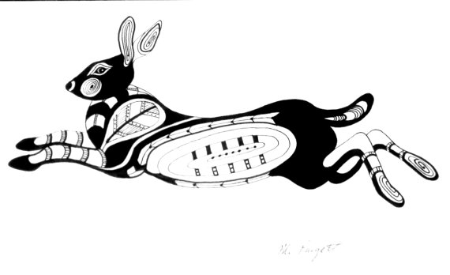
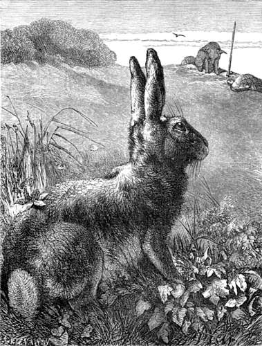
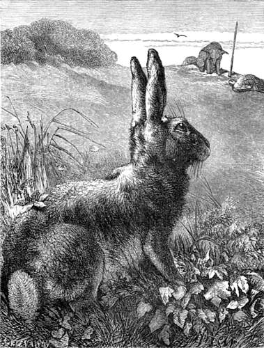

When Glooskap first created the animals in Canada, he took good care that they should all be friendly to himself and to his people. They could all talk like men, and like them they had one common speech. Each had a special duty to do for Glooskap, and each did his best to help him in his work. Of all the animals, the gentlest and most faithful was Bunny the Rabbit. Now, in those first days of his life, Rabbit was a very beautiful animal, more beautiful than he is to-day. He had a very long bushy tail like a fox; he always wore a thick brown coat; his body was large and round and sleek; his legs were straight and strong; he walked and ran like other animals and did not hop and jump about as he does now. He was always very polite and kind of heart. Because of his beauty and his good qualities, Glooskap chose him as his forest guide, his Scout of the Woods. He gave him power that enabled him to know well all the land, so that he could lead people and all the other animals wherever they wished to go without losing their way.
One day in the springtime it chanced that Bunny sat alone on a log in the forest, his long bushy tail trailing far behind him. He had just come back from a long scouting tour and he was very tired. As he sat resting in the sun, an Indian came along. The Indian was weary and stained with much travel, and he looked like a wayfarer who had come far. He threw himself on the ground close to the log on which Rabbit sat and began to weep bitterly. Bunny with his usual kindness asked, "Why do you weep?" And the man answered, "I have lost my way in the forest. I am on my way to marry this afternoon a beautiful girl whom her father pledged to me long ago. She is loved by a wicked forest Fairy and I have heard that perhaps she loves him. And I know that if I am late she will refuse to wait for me and that she will marry him instead." But Rabbit said: "Have no fear. I am Bunny, Glooskap's forest guide. I will show you the way and bring you to the wedding in good time." The man was comforted and his spirits rose, and they talked some time together and became good friends.
When the man had somewhat got back his
strength, they began their journey to the wedding.
But Rabbit, being nimble-footed, ran fast and was
soon so far in advance of his companion that he was
lost to view. The man followed slowly, catching here
and there through the green trees a glimpse of his
guide's brown coat. As he stumbled along, thinking
of his troubles, he fell into a deep pit that lay
close to the forest path. He was too weak to climb
out, and he called loudly for help. Bunny soon
missed his follower, but he heard the man's yells,
and turning about, he ran back to the pit. "Have no fear," said Rabbit as he looked over the edge, "I will get you out without mishap." Then, turning his back to the pit, he let his long bushy tail hang to the bottom. "Catch hold of my tail," he ordered, "hold on tight and I will pull you out." The man did as he was told. Rabbit sprang forward, but as he jumped, the weight of the man, who was very heavy, was more than he could bear, and poor Bunny's tail broke off within an inch of the root. The man fell back into the pit with a thud, holding in his hand poor Rabbit's tail. But Bunny in all his work as a guide had never known defeat, and he determined not to know it now. Holding to a strong tree with his front feet, he put his hind legs into the pit and said to the man, "Take hold of my legs and hang on tight." The man did as he was told. Then Rabbit pulled and pulled until his hind legs stretched and he feared that they too would break off; but although the weight on them was great, he finally pulled the man out after great difficulty. He found to his dismay that his hind legs had lengthened greatly because of their heavy load. He was no longer able to walk straight, but he now had to hop along with a strange jumping gait. Even his body was much stretched, and his waist had become very slender because of his long heavy pull. The two travellers then went on their way, Bunny hopping along, and the man moving more cautiously.
Finally, they reached the end of their
journey. The people were all gathered for the wedding, and eagerly awaiting the coming of the bridegroom. Sure enough, the forest Fairy was there, trying by his tricks to win the girl for himself. But the man was in good time, and he married the maiden as he had hoped. As he was very thankful to Bunny, he asked him to the marriage dance and told him he might dance with the bride. So Rabbit put rings on his heels and a bangle around his neck, after his usual custom at weddings, and joined the merry-makers. Through the forest green where they danced many tiny streams were flowing, and to the soft music of these the dance went on. As the bride jumped across one of these streams during her dance with Bunny, she accidentally let the end of her dress drop into the water so that it got very wet. When she moved again into the sun, her dress, because of its wetting, shrank and shrank until it reached her knees and made her much ashamed. But Rabbit's heart was touched as usual by her plight; he ran quickly and got a deer skin that he knew to be hidden in the trees not far away, and he wrapped the pretty skin around the bride. Then he twisted a cord with which to tie it on. He held one end of the cord in his teeth and twisted the other end with his front paws. But in his haste, he held it so tight and twisted it so hard that when a couple waltzing past carelessly bumped into him the cord split his upper lip right up to the nose. But Rabbit was not dismayed by his split lip. He fastened on the bride's new deer-skin gown, and then he danced all the evening until the moon was far up in the sky. Before he went away, the man and his bride wanted to pay him for his work, but he would not take payment. Then the bride gave him a new white fur coat and said, "In winter wear this white coat; it is the colour of snow; your enemies cannot then see you so plainly against the white ground, and they cannot so easily do you harm; but in summer wear your old brown coat, the colour of the leaves and grass." And Bunny gratefully took the coat and went his way.
He lingered many days in the new country, for he was ashamed to go back to his own people with his changed appearance. His lip was split; his tail was gone, and his hind legs were stretched and crooked. Finally, he mustered up his courage and returned home. His old friends wondered much at his changed looks, and some of them were cruel enough to laugh at him. But Bunny deceived them all. When they asked him where he had been so long, he answered, "I guided a man to a far-off land which you have never seen and of which you have never heard." Then he told them many strange tales of its beauty and its good people.
"How did you lose your fine tail?" they asked. And he answered, "In the land to which I have been, the animals wear no tails. It is an aristocratic country, and wishing to be in the fashion, I cut mine off."
"And why is your waist so slender?" they
asked. "Oh," replied Bunny, "in that country it is
not the fashion to be fat, and I took great trouble to make my waist slight and willowy." "Why do you hop about," they asked, "when you once walked so straight?" "In that land," answered Bunny, "it is not genteel to walk straight; only the vulgar and untrained do that. The best people have a walk of their own, and it took me many days under a good walking-teacher to learn it."
"But how did you split your upper lip?" they asked finally. "In the land to which I have been," said Bunny, "the people do not eat as we do. There they eat with knives and forks and not with their paws. I found it hard to get used to their new ways. One day I put food into my mouth with my knife—a very vulgar act in that land—and my knife slipped and cut my lip, and the wound has never healed."
And being deceived and envying Bunny because of the wonders he had seen, they asked him no more questions. But the descendants of Rabbit to this day wear a white coat in winter and a brown one in summer. They have also a split upper lip; their waist is still very slender; they have no tail; their hind legs are longer than their front ones; they hop and jump nimbly about, but they are unable to walk straight. And all these strange things are a result of old Bunny's accident at the man's wedding long ago.
 

Transcribed by Cyrus MacMillan, 1917. The writer's deepest thanks are expressed to the nameless Indians and "habitants," the fisherman and sailors, "the spinners and the knitters in the sun," from whose lips he heard these stories.
Back to Top